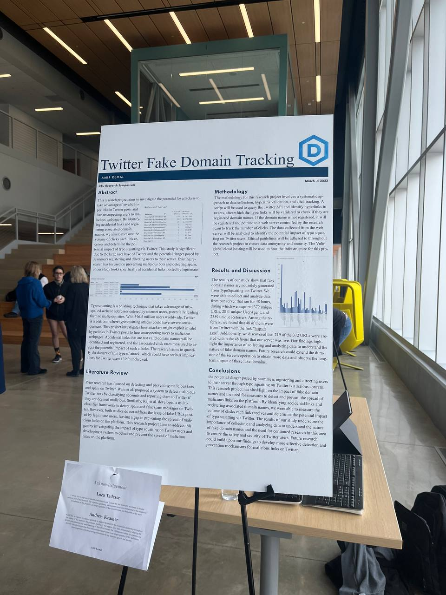
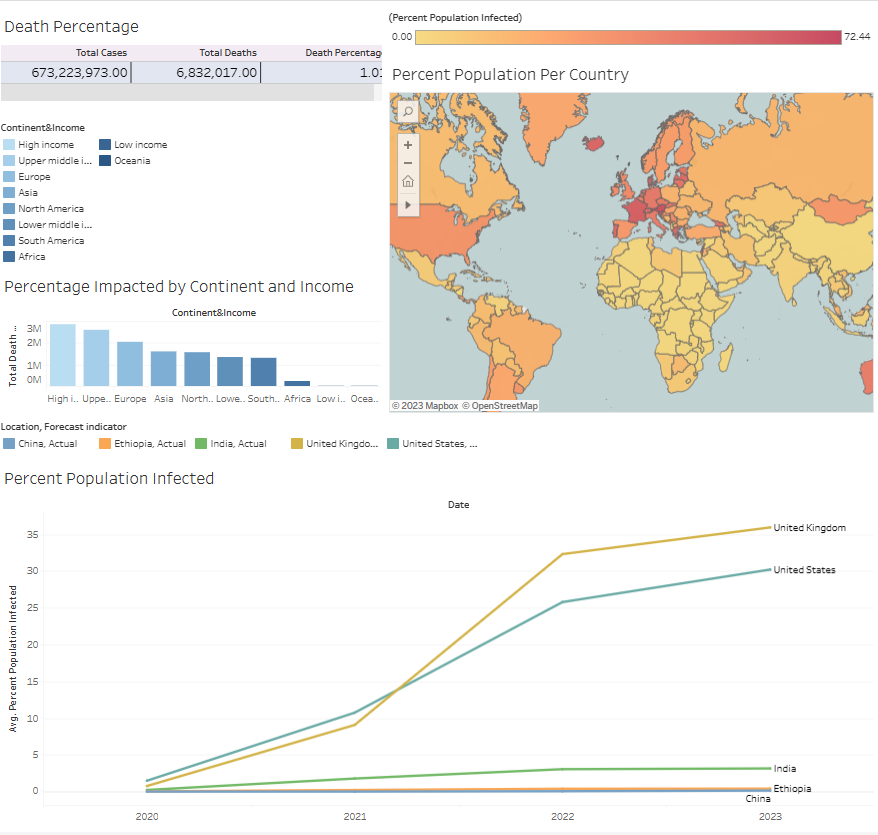
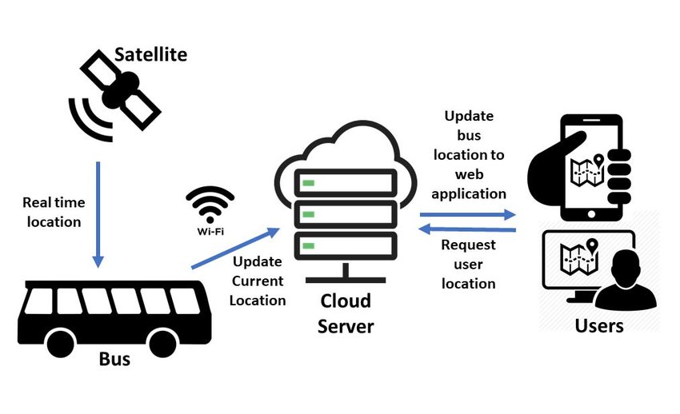

Welcome to my portfolio showcasing machine learning and data analysis projects. As a Computer Scientist and Data Analyst, I specialize in statistical modeling, predictive analytics, and machine learning. Below are three featured ML projects demonstrating my ability to extract valuable insights from complex datasets and build data-driven solutions.
Technologies: Python, LangChain, RAG (Retrieval-Augmented Generation), Large Language Models, Vector Databases, PDF Processing
Developed an intelligent study guide application leveraging RAG (Retrieval-Augmented Generation) technology and Large Language Models. Ragify enables users to upload PDF documents and ask natural language questions about the content, receiving accurate, context-aware answers. The system combines document parsing, semantic search, and LLM-powered question answering to create an interactive learning experience.
Key Features:
- PDF document ingestion and text extraction
- Vector database for semantic document search
- RAG pipeline for context-aware responses
- Natural language question-answering interface
- Accurate information retrieval from source documents
Time Series & ML Forecasting
Technologies: Python, Random Forest, LSTM (Long Short-Term Memory), TensorFlow/Keras, Scikit-learn, Pandas, Time Series Analysis
Built a sophisticated cryptocurrency price prediction system combining Random Forest and LSTM neural networks to forecast Solana (SOL) prices. The hybrid model leverages both traditional machine learning and deep learning approaches to capture complex patterns in cryptocurrency market data. Implemented advanced feature engineering and time series analysis for improved prediction accuracy.
Technical Highlights:
- Hybrid Random Forest + LSTM architecture
- Time series data preprocessing and feature engineering
- Historical price pattern analysis
- Model evaluation with multiple metrics (RMSE, MAE)
- Real-time prediction capability

Technologies: Python, Machine Learning, Classification Algorithms, Scikit-learn, Feature Engineering, Data Analytics
Developed a machine learning model to predict whether restaurants and bars will become popular hotspots based on various features including location data, demographics, amenities, and historical traffic patterns. The predictive model helps business owners and investors make data-driven decisions about venue selection and marketing strategies.
Project Highlights:
- Multi-feature classification model
- Location-based analytics and demographic analysis
- Feature importance ranking for business insights
- Model comparison (Logistic Regression, Random Forest, XGBoost)
- Actionable predictions for business strategy
Comprehensive SQL-based analysis exploring COVID-19 data including death percentages by country, infection rates, and total death counts. Used advanced SQL queries for data aggregation and statistical analysis.

Interactive Tableau dashboard visualizing COVID-19 data with bar graphs for percentage impacted by continent and income, line graphs for infection rates, and geographic maps showing percentage population infected per country.
Data cleaning project using SQL to prepare housing dataset. Removed duplicates, handled missing data, fixed structural errors, and populated incomplete records for analysis-ready data.

Team project creating a shuttle system for DSU students, faculty, and Madison residents. Provides affordable transportation options and addresses mobility challenges in the community.